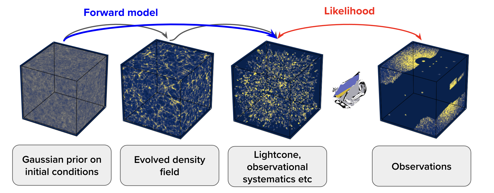

Current Research
PhD in Machine Learning the Initial Condtions of the Universe
Machine Learning the Initial Condtions of the Universe
My name is Ludvig Doeser, and I conduct research in cosmology, with a particular focus on the large-scale structures of the Universe and how they have formed. I conduct research in cosmology, with a particular focus on the large-scale structures of the Universe and how they have formed.
In my research, I combine physics with modern data science methods, such as Bayesian inference and machine learning, to understand how the Universe has evolved from its initial state through billions of years of gravitational collapse. More specifically, I aim to reconstruct the density fluctuations in the early Universe by analyzing the distribution of galaxies today.
From these reconstructed initial conditions, we can create a digital twin of our Universe and its dynamic evolution, allowing us to test our theoretical models against observational data.
Source: Ludvig Doeser @ Stockholm UniversityField-level inference of the 3D cosmic initial conditions from the large-scale structure of galaxies has proven to be a promising approach for gaining deeper insights into our Universe. Through the incorporation of non-linear models of structure formation, it enables causal explanations of the data without compression. However, accurately modelling the unprecedented data from Stage-IV galaxy surveys requires improved modelling and inference technologies to efficiently handle the increased complexity at smaller scales. To tackle these challenges, I am pushing two approaches for leveraging deep learning in the context of inferring the 3D cosmic initial conditions:
-
The incorporation of a neural network-based field-level emulator into the initial conditions inference framework BORG (Bayesian Origin Reconstruction from Galaxies; Jasche & Wandelt 2013, Jasche & Lavaux, 2019) to increase efficiency and accuracy in recovering non-linear structures. See Doeser et al. 2024 for details. Image credit below: D.K. Ramanah et al. (2019).

- A gradient-free framework LULO (Learning the Universe by Learning to Optimize; Doeser et al. 2025) that uses deep learning as a neural optimizer for reconstructing 3D initial conditions by fitting state-of-the-art non-differentiable simulators to cosmological data.
{kind=link}